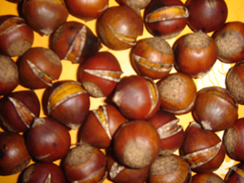
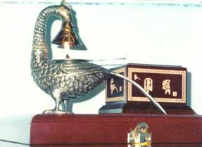
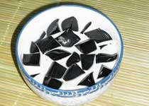
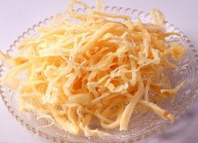

-

板栗
传统名优果品，以其粒大、果皮亮、肉质粉、香甜细腻，并具糯性而著称。农历八月十五前...
-

壮族凤灯
凤灯是壮族人民心目中的神灯，又是世界上最古老的环保产品。平果县开发制作的凤灯工艺...
-

龟苓膏
龟苓膏是历史悠久的梧州传统药膳，相传最初是清宫中专供皇帝食用的名贵药物。它主要以...
-

鱿鱼丝
广西北海是北部湾畔的一颗明珠，这里的海洋资源丰富，是中国四大渔港之一，以盛产优质...